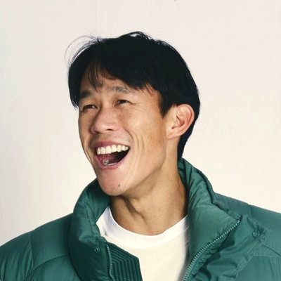
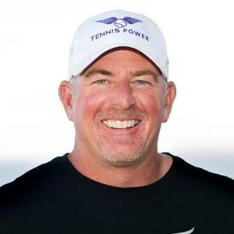

通往大學網球的道路
三個階段，從起步規劃到大一。無論孩子目前在哪個階段，都可以加入。
-
18 至 10 年級（約國二至高一）
準備
在教練可以主動聯繫之前，打好基礎。
- 訓練與賽事規劃，提升 UTR 與 WTN
- 依 NCAA 規定規劃課程、成績與考試時程
- 國際家庭的英文與文件準備
-
210 至 12 年級（約高一至高三）
招募
讓對的教練看見孩子，並選擇最適合的學校。
- 誠實的程度評估，以及 15 至 20 所目標學校
- 球員資料、比賽影片與聯繫教練
- 校園參訪、錄取條件與簽約
-
3大一
適應
順利融入，在大學第一年表現出色。
- 入學前準備計畫
- 整學年每月追蹤
- 球隊生活、NCAA 規定與課業
服務對象
想在大學打網球的青少年球員，以及希望有一套誠實可行計畫的家庭。無論孩子才剛開始考慮大學，或已經在與教練聯繫，我們都會協助找到最適合的方向。
國際家庭
除了招募之外，我們也協助台灣及亞洲各地的家庭處理 NCAA 文件、翻譯、英文檢定，以及各校的申請要求。
關於我們

Jason Jung
曾於密西根大學參加 NCAA 第一級（Division I）網球，之後征戰職業巡迴賽 14 年。曾代表台灣參加亞運及世界大學運動會並奪得金牌。從親身經歷深知招募流程與大一的轉變。

Oliver Messerli
Oliver Messerli 是國際知名的高水準網球教練、顧問與導師，在網球界耕耘超過三十年。他來自南非，畢生致力於幫助運動員將潛力化為機會——無論是爭取大學獎學金、踏上職業巡迴賽，或是培養遠遠超越網球的人生能力。
Arthur Chen
以國際學生身分在肯塔基大學參加 NCAA 第一級網球。協助國際家庭處理資格審核、文件準備及赴美就學的各項事宜。
常見問題
費用是多少？
第一次評估免費。評估後，我們會依孩子的年級、目標及所需的支援程度建議方案，並提供確切報價。所有費用皆為固定金額，並在開始前以書面約定。
你們保證獎學金或校隊名額嗎？
我們也希望可以，但沒有人能做出這樣的保證，若有人這麼承諾，請務必謹慎。教練會依據球員程度、比賽成績、學業與球隊需求做決定。我們能承諾的是：孩子將做好充分準備、被合適的學校看見，並做出明智的選擇。
什麼時候開始比較好？
最好在 9 或 10 年級（約國三或高一）。NCAA 第一級教練從 10 年級結束後的 6 月 15 日起可以主動聯繫球員，而真正關鍵的準備在那之前：參加合適的青少年賽事、準備目標學校要求的考試，並維持成績與核心課程進度。及早開始，孩子就能在教練可以聯繫的那一天做好準備。
可以遠距合作嗎？
可以。遠距評估會參考比賽影片、UTR、WTN（世界網球分級）及比賽成績。是否提供現場評估，將視您的所在地與方案而定。
預約免費評估
免費與您聊聊孩子的情況、目標，以及我們是否適合彼此。您將獲得誠實的初步評估、明確的下一步與報價，沒有任何壓力。